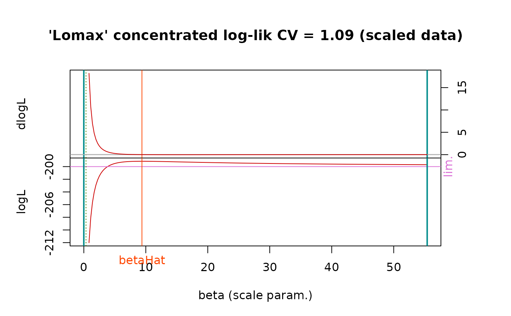

ML estimation of the Lomax distribution
flomax.RdFast Maximum Likelihood estimation of the Lomax distribution.
Arguments
- x
-
Sample vector to be fitted. Should contain only positive non-NA values.
- info.observed
-
Should the observed information matrix be used or the expected one be used?
- plot
-
Logical. If
TRUE, a plot will be produced showing the derivative of the concentrated log-likelihood, function of the shape parameter. - scaleData
-
Logical. If
TRUEobservations inx(which are positive) are divided by their mean value. The results are in theory not affected by this transformation, but scaling the data could improve the estimation in some cases. The log-likelihood plots are shown using the scaled values so the returned estimate of the scale parameter is not the the abscissa of the maximum shown on the plot. - cov
-
Logical. If
FALSE, a minimal estimation is performed with no covariance matrix or derivative returned. This can be useful when a large number of ML estimations are required, e.g. to sample from a likelihood ratio.
Details
The likelihood is concentrated with respect to the shape parameter. This function is increasing for small values of the scale parameter \(\beta\). For large \(\beta\), the derivative of the concentrated log-likelihood tends to zero, and its sign is that of \((1 - \textrm{CV}^2)\) where \(\textrm{CV}\) is the coefficient of variation, computed using \(n\) as denominator in the formula for the standard deviation.
The ML estimate does not exist when the sample has a coefficient of variation CV less than 1 and it may fail to be found when CV is greater than yet close to 1.
Value
A list with the following elements
- estimate
-
Parameter ML estimates.
- sd
-
Vector of (asymptotic) standard deviations for the estimates.
- loglik
-
The maximised log likelihood.
- dloglik
-
Gradient of the log-likelihood at the optimum. Its two elements should normally be close to zero.
- cov
-
The (asymptotic) covariance matrix computed from theoretical or observed information matrix.
- info
-
The information matrix.
References
J. del Castillo and J. Daoudi (2009) "Estimation of the Generalized Pareto Distribution", Statist. Probab. Lett. 79(5), pp. 684-688.
D.E. Giles, H. Feng & R.T. Godwin (2013) "On the Bias of the Maximum Likelihood Estimator for the Two-Parameter Lomax Distribution" Comm. Statist. Theory Methods. Vol. 42, n. 11, pp. 1934-1950.
N. Johnson, S. Kotz and N. Balakrishnan Continuous Univariate Distributions vol. 1, Wiley 1994.
Note
The estimates are biased for small or medium sized sample. The bias is positive for the shape parameter, thus the estimated shape tends to be larger than the true unknown value.
Fitting a Lomax distribution to an exponential sample might lead to a divergence since the exponential is the limit of a Lomax distribution with large shape and large scale with constant ratio shape/scale. Fitting this distribution to a sample having a coefficient of variation smaller than 1 is not allowed since it should lead to divergence of the estimation.
The default value of info.observed was set to TRUE from
version 3.0-1 because standard deviations obtained with this
choice are usually better.
See also
Lomax for the Lomax distribution.
Examples
## generate sample
set.seed(1234)
n <- 200
alpha <- 2 + rexp(1)
beta <- 1 + rexp(1)
x <- rlomax(n, scale = beta, shape = alpha)
res <- flomax(x, plot = TRUE)

## compare with a GPD with shape 'xi' and scale 'sigma'
xi <- 1 / alpha; sigma <- beta * xi
res.evd <- evd::fpot(x, threshold = 0, model = "gpd")
xi.evd <- res.evd$estimate["shape"]
sigma.evd <- res.evd$estimate["scale"]
beta.evd <- sigma.evd / xi.evd
alpha.evd <- 1 / xi.evd
cbind(Renext = res$estimate, evd = c(alpha = alpha.evd, beta = beta.evd))
#> Renext evd
#> shape 10.370332 10.376502
#> scale 3.295373 3.297603